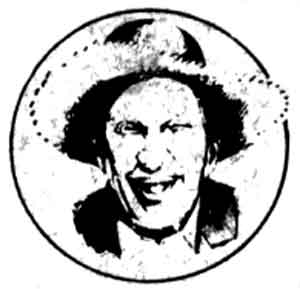

"Some things have to be believed to be seen. "
Well sir, some folks jist cain't get a good start on the day until they's had a cup of hot, fresh coffee. Why, heck, there's even a wild rumor that one or two of the editors of this here magazine have a wee weakness for thet ol' devil caffeine theyselves. Still, most people's coffee habits don't have a veritable heritage behind 'em.
Which is why a lot of folks prob'ly wouldn't understand what happened the other morning when of Ott Bartlett wallowed into the Plumtree Crossin' General Store looking more ornery than a constipated bear . . . but didn't say a cussed syllable while Doc Thromberg walked right up to him and led him to one of the store's two back rooms. An', if thet weren't strange enuff, next Newt Blanchard stepped in the store-as grouch-faced as a man what swallowed a beehive-and Doc repeated the same procedure (only he shut thet silent feller up in the other back room)!
Well, them goin's-on was too much for the other good of boys of the Crossin's General Assembly to take quietly. But when they asked Doc Thromberg jist what this side of senility was a-goin' on, the old physician jist went over and plugged in the store's percolator. Then he pulled up a chair amongst the group, leaned back, and commenced to tell the followin' story:
Boys, way back before your grandpappy was a gleam in his mammy's eye, Ott's Great Granddaddy Bartlett and Newt's pa's pa's Pa Blanchard had cabins back in these woods, two frontier shacks what were each a good day's travel from the nearest store. Now, ever' six months or so, backcountry fellas like Amos Bartlett or Cephas Blanchard had to ride their wagons into town and swap whatever they'd hunted or growed up for the three supplies a mountain man needed most . . . flour, salt, and-most especially- coffee.
One early spring Cephas had come into luck, having bagged him two bears what was fighting over a hive full of sourwood honey in an oak tree that jist happened to be surrounded by an entire patch of wild 'sang and that-when he shot the bears-dropped a dead branch an' plum killed a passing 12-point buck, which collapsed into a nearby stream, where its horns speared a passel of four-pound brown trout. Well, Newt's ancester took the entire swag to town and ended up with so much credit at the trading post-even after he'd bought all the goods he could possibly desire-that he didn't know how to use it all. An', since he figgered he'd better use it all up on something, Cephas decided he'd jist buy all of the 500 pounds of coffee beans the man had in the store!
It so happens, though, that Amos Bartlett had run out of supplies hisself about the same time. An' when he got to town to trade his own cache of goods, the storekeep had everything Amos needed, exceptin' the one thing them old mountaineers needed more'n babes need milk . . . coffee. When Amos heard that it was Cephas Blanchard what had hoarded up all the beans, he knew the only thing he could do was pay a visit to the Blanchard cabin an' see what kinda trade the two of them could work out.
'Course, it took Amos another full day to ride there. By that time, after 48 hours without any coffee, his head felt like he'd slept under a waterfall, and his digestion was jumpin' fences. But Cephas, when he saw his neighbor comin', rushed outside with a cup of steamin' brew in one hand and a couple of coffee-flour biscuits in the other and proceeded to ingest them all . . . without offerin' Amos a single taste! Then he whipped a pinch of ground coffee from a small can and tucked it under his lip like terbaccy!
After racing back to his kitchen to grab another cup of java, Cephas caught Amos by the arm and dragged him out to view "Blanchard's Grand Experyment", an attempt to brew a cup of coffee that really was-as the old saw goes-too thick to drink but too thin to plow. He'd taken up two sacks-a full hundred pounds!-of beans, run them through his sorghum cane crusher, an' was boilin' the soaked grindin's in his 12-foot-long molasses-cooling pan, the kind with a staircase of channels that the concentratin' liquid oozes its way through. To hear Cephas tell it, that fire'd been burning for over a day already . . . and this was his second try! "The first hundred-pound brew got a smidge of a burned flavor," Cephas allowed, "so I jist threw it all out."
Poor Bartlett! His nostrils was greedily suckin' in thet tantalizin' aroma while his eyes was feastin' on the muddifyin' liquid thet was ploppin' out of Cephas's brewin' apparatus. Yet all the while his host weren't offerin' him a drop to drink.
The way Amos stood there, shakin' like a rabbit havin' nightmares, made it real clear he was in no strong bargainin' position, and Mr. Blanchard took full advantage of the situation. When they got down to dickerin'-during which time Cephas Blanchard spoke faster and faster and Amos Bartlett yelled louded and louder-it turned into a one-side kerpastin'. Amos ended tip swappin' a dozen hens for a mere twelve coffee beans . . . a chicken a bean!
Well, of Bartlett stretched those twelve beans further'n his great grandson ever has squeezed the truth. He used one at a time, addin' chicory roots and even dirt to the morsel, then savin' and brewin' and rebrewin' the day's mixin's until it completely dissolved. And the poor fella run downhill on this beverage somethin' pitiful.
Cephas, meanwhile, had got so coffeed up thet he was workin' faster'n an overcharged buzz saw on his own farm. In fact, one day he got disgusted when his horse didn't seem to want to pull the plow as fast as Cephas wanted to push it, so he mixed a few coffee grounds in the steed's feed to speed the horse up. When thet didn't help, the frenzied farmer fed the animal a jar of his special "sorghum processed" coffee extract . . . and plum killed the critter.
A short spell later, when Blanchard was brewin' his last day's worth of beans (a mere 25 pounds), the truth suddenly set in. He was goin' to be in trouble now . . . he didn't have a horse to get him to town! Still, it wasn't till Cephas's shakin' hands picked up that empty cup the next morning that he finally really admitted that the only thing he could do was swallow his pride . . . so he walked all the way to Amos Bartlett's to borrow a horse.
Wellllllllll now, you can imagine Amos was jist a wee bit tempted to take advantage of this situation. "Sure, I'll lend a horse to an old friend like you," he said. "All you gotta do for me is bring me all the cut firewood I need for the next 18 years, along with 36 gallons of fresh honey, seven prime hogs all slaughtered, cured, and sliced, a dozen new white-oak stave barrels filled to the rims with wild 'sang roots, an' half of every pound of coffee you buy from now on."
"Never!" Cephas shouted. "I ain't givin' away any coffee!"
"Then you ain't gettin' to town, you chunk of burnt boarmeat!"
"Why, you blind-eyed, leech-eating privy digger!"
"Cross of a sun-rot rattlesnake and a three-legged polecat!"
"Buzzard leavin's!"
"Bloated cow's breath!"
Well, thet sort of aggravated shoutin' and crabbin' and fussin' and squawkin' and caterwaulin' and grouchin' and slanderin' and carpin' and brayin' and hollerin' and bellowin' and yelpin' and yammerin' and fumin' went on for three solid days. It woulda likely gone on for three years, too, but my own ancester, the first Doc Thromberg, happened to be ridin' along a few hollers over, heard all the commotion, and detoured by to see what' was goin' on.
It didn't take the of Doc long to figure out what ailment he was faced with. An' seein' as how country doctors back then carried a little coffee with 'em-for medicinal purposes, you know-he jist stepped right inside Mr. Bartlett's kitchen and started brewin'.
As soon as the aroma from thet coffee wafted out the doorway, the two rivals dropped their hostilities and raced for the house. But Doc barred the door shut and barked out, "If you boys want any of this java, you're going to have to make me one ironclad promise!"
"Anything! We'll do anything!" they both whined.
"Swear that ever' day from now, you - no, make that all Bartletts and Blanchards, kin now or kin to come-won't ever talk to one another before you've had at least one cup of coffee."
Well, after both codgers pledged their entire families' bloods to the oath, the good doctor dispensed his remedy. An' sure enough, it worked! By the second or third cup of the black medicine, both antagonists was see in' the entire world in a much more reasonable light. Before long, they'd worked out an agreement to share Amos's horse . . . and even future coffee supplies, as well. But forever after, of Doc made sure the two gents stuck to the promise they'd gived him, jist to keep thet kind of trouble from startin' up agin.
Jist then Doc Thromberg interrupted his own tale to check the coffeepot. "Good. It looks ready now," he declared. Then he called out in a loud voice, "All right boys, you can come out."
Ott Bartlett an' Newt Blanchard promptly emerged from the General Store's two back rooms, rushed over to the counter, and swilled cups of the fresh brewin's so fast their stomachs musta turned red. Then Newt wiped his lips an' said, "Ahhhh. You know, it ain't goin' to be such a mizzerable day after all."
To which Ott rosily added, "Bless you, Mr. Blanchard, you're right, as always. What say we break out the of checkerboard an' play a few games jist for fun?"
No sir, some folks jist cain't git a good start on the day without a cup of coffee. It's a fact.
|
 |
|
|